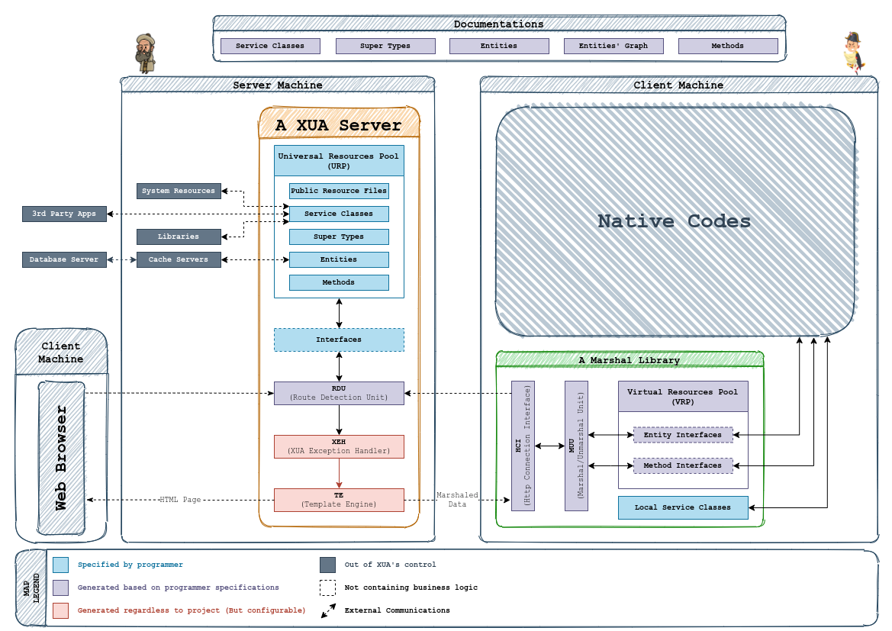

Preface; An Introduction To XUA
XUA is shortened form of Xuarazmi, named after al-Khwarizmi,
Persian mathematician and poet, formerly Latinized as Algorithmi (and yes that's where
the word algorithm comes from).
XUA is a Code Generator Tool, mainly usable for creating Web-Services and in some cases
for creating complete Web-Sites (including back-end and front-end). The aim of XUA is to
generate all trivial and technical codes for us so we only need to write the codes that
actually require human intelligence. In other words the only thing that XUA does not do
is it's name. We need to give it algorithms and it generates codes that do the rest by themselves.
XUA generates server codes in PHP language.
While a full and complete PHP Project can be generated by XUA, it is not possible to get a complete
front-end project, instead, XUA can generate a front-end library (Marshal Library) that can make the
connection between client and XUA server faster, more secure, more reliable, and easier to implement.
Currently, XUA tools are only available on linux.
- Python 3, is required to build projects and make templates.
- The PHP Engine and a PHP Server, is recommended for test and debug on local server.
- MySQL Server, is recommended for test and debug on local server.
- VSCode, is recommended with XUA extension installed to code in XUA language. Although it's not
a necessity, but the extension will help with code correction and autocomplete as well as making the build process easier.
Installing VSCode XUA extension will automatically install requirements and XUA tools, but if you're not willing to use VSCode,
you can clone our repository.
git clone https://github.com/kmirzavaziri/xua.git
And run
python3 xua.py install
To create a new project, go to a directory you want to create the project and run
xua new project PROJECT_NAME
Now build the template project you just created, run,
xua build
or alternatively, click on build button that appears in VSCode after installing the plugin.
Set up a PHP server on the build destination location (
public_html by default)cd public_html
php -S localhost:8000
or alternatively, click on run server button that appears in VSCode after installing the plugin.
Now you should be able to see the Hello World! page by visiting the localhost:8000 page on
your browser.
a XUA project is actually a combination of Specifications that will result in generating a server
project (shown as A XUA Server), a front-end library (shown as A Marshal Library), and a complete
set of documentations (shown as Documentations).

As shown above, there are only few units of the generated result that need explicit specification by
programmer (marked blue), a XUA project is simply a set of files specifying these units. This leads us to
the following structure of a XUA project.
XUA Project Root
├─ Entities
│ └─ (empty by default)
├─ Interfaces
│ └─ (homepage interface and URPI)
├─ Methods
│ └─ (empty by default)
├─ Resources
│ ├─ Public
│ │ └─ (empty by default)
│ ├─ Private
│ └─ └─ (empty by default)
├─ Services
│ ├─ Server
│ │ ├─ PHP
│ │ └─ └─ (xua services)
│ ├─ Marshal
│ │ ├─ Dart
│ │ │ └─ (xua services)
│ │ ├─ Java
│ │ │ └─ (xua services)
│ │ ├─ JavaScript
│ │ │ └─ (xua services)
│ │ ├─ Kotlin
│ │ │ └─ (xua services)
│ │ ├─ Objective-C
│ │ │ └─ (xua services)
│ │ ├─ Swift
│ └─ └─ └─ (xua services)
├─ Supers
│ └─ (basic supers)
└─ config.xml
In this documentation, we try to cover all of these units. By visiting the page Architecture
and clicking on a unit, you'll be redirected to documentation section of that unit.
Introduction